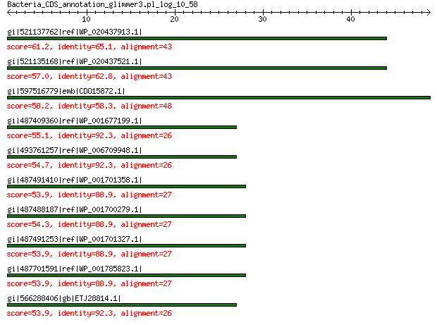

bitscore colors: <40, 40-50 , 50-80, 80-200, >200
 BLASTP 2.2.31+
Reference: Stephen F. Altschul, Thomas L. Madden, Alejandro A.
Schaffer, Jinghui Zhang, Zheng Zhang, Webb Miller, and David J.
Lipman (1997), "Gapped BLAST and PSI-BLAST: a new generation of
protein database search programs", Nucleic Acids Res. 25:3389-3402.
Reference for composition-based statistics: Alejandro A. Schaffer,
L. Aravind, Thomas L. Madden, Sergei Shavirin, John L. Spouge, Yuri
I. Wolf, Eugene V. Koonin, and Stephen F. Altschul (2001),
"Improving the accuracy of PSI-BLAST protein database searches with
composition-based statistics and other refinements", Nucleic Acids
Res. 29:2994-3005.
Database: All non-redundant GenBank CDS translations+PDB+SwissProt+PIR+PRF
excluding environmental samples from WGS projects
49,011,213 sequences; 17,563,301,199 total letters
Query= Bacteria_CDS_annotation_glimmer3.pl_log_10_58
Length=48
Score E
Sequences producing significant alignments: (Bits) Value
gi|521137762|ref|WP_020437913.1| hypothetical protein 61.2 5e-11
gi|521135168|ref|WP_020437521.1| hypothetical protein 57.0 2e-09
gi|597516779|emb|CDO15872.1| unnamed protein product 58.2 2e-09
gi|487409360|ref|WP_001677199.1| hypothetical protein 55.1 2e-08
gi|493761257|ref|WP_006709948.1| hypothetical protein 54.7 2e-08
gi|487491410|ref|WP_001701358.1| unnamed protein product 53.9 2e-08
gi|487488187|ref|WP_001700279.1| unnamed protein product 54.3 3e-08
gi|487491253|ref|WP_001701327.1| unnamed protein product 53.9 3e-08
gi|487701591|ref|WP_001785823.1| hypothetical protein 53.9 3e-08
gi|566288406|gb|ETJ28814.1| hypothetical protein Q609_ECAC00002G... 53.9 3e-08
>gi|521137762|ref|WP_020437913.1| hypothetical protein [Salmonella enterica]
gi|519431757|emb|CDF50421.1| hypothetical protein SMA01_2900 [Salmonella enterica subsp. enterica
serovar Manhattan str. 111113]
Length=49
Score = 61.2 bits (147), Expect = 5e-11, Method: Compositional matrix adjust.
Identities = 28/43 (65%), Positives = 33/43 (77%), Gaps = 0/43 (0%)
Query 1 MPNSAVKRRSADGSVGSPHVRVGNCQTLFWDKKAIQKGGLFAF 43
MPNS VKRRSADGSVGSPH RVGNCQT K ++++ GL +
Sbjct 1 MPNSEVKRRSADGSVGSPHARVGNCQTSNKTKGSVERLGLLFY 43
>gi|521135168|ref|WP_020437521.1| hypothetical protein [Salmonella enterica]
gi|519432726|emb|CDF48714.1| hypothetical protein SMA01_1193 [Salmonella enterica subsp. enterica
serovar Manhattan str. 111113]
gi|519432881|emb|CDF48568.1| hypothetical protein SMA01_1047 [Salmonella enterica subsp. enterica
serovar Manhattan str. 111113]
Length=44
Score = 57.0 bits (136), Expect = 2e-09, Method: Compositional matrix adjust.
Identities = 27/43 (63%), Positives = 30/43 (70%), Gaps = 0/43 (0%)
Query 1 MPNSAVKRRSADGSVGSPHVRVGNCQTLFWDKKAIQKGGLFAF 43
MPNS VKRRSADGSVGSPH RVGNCQ K + + GL +
Sbjct 1 MPNSEVKRRSADGSVGSPHARVGNCQASNKTKGPVGRQGLLFY 43
>gi|597516779|emb|CDO15872.1| unnamed protein product [Klebsiella pneumoniae]
Length=141
Score = 58.2 bits (139), Expect = 2e-09, Method: Compositional matrix adjust.
Identities = 28/48 (58%), Positives = 32/48 (67%), Gaps = 0/48 (0%)
Query 1 MPNSAVKRRSADGSVGSPHVRVGNCQTLFWDKKAIQKGGLFAFNKKLT 48
MPNS VKRRSADGSVGSPHVRVGNCQ + +++ G K T
Sbjct 1 MPNSEVKRRSADGSVGSPHVRVGNCQASNKAESPVERPGFLFLRLKRT 48
>gi|487409360|ref|WP_001677199.1| hypothetical protein, partial [Salmonella enterica]
gi|444871380|gb|ELX95814.1| hypothetical protein SE20037_02802, partial [Salmonella enterica
subsp. enterica serovar Enteritidis str. 20037]
Length=94
Score = 55.1 bits (131), Expect = 2e-08, Method: Compositional matrix adjust.
Identities = 24/26 (92%), Positives = 24/26 (92%), Gaps = 0/26 (0%)
Query 1 MPNSAVKRRSADGSVGSPHVRVGNCQ 26
MPNS VKRRSADGSVGSPH RVGNCQ
Sbjct 69 MPNSEVKRRSADGSVGSPHARVGNCQ 94
>gi|493761257|ref|WP_006709948.1| hypothetical protein, partial [Serratia symbiotica]
gi|320028979|gb|EFW11183.1| hypothetical protein SSYM_0155 [Serratia symbiotica str. Tucson]
Length=64
Score = 54.7 bits (130), Expect = 2e-08, Method: Compositional matrix adjust.
Identities = 24/26 (92%), Positives = 24/26 (92%), Gaps = 0/26 (0%)
Query 1 MPNSAVKRRSADGSVGSPHVRVGNCQ 26
MPNS VKRRSADGSVGSPH RVGNCQ
Sbjct 37 MPNSEVKRRSADGSVGSPHARVGNCQ 62
>gi|487491410|ref|WP_001701358.1| unnamed protein product [Escherichia coli]
gi|412965381|emb|CCK49314.1| unnamed protein product [Escherichia coli chi7122]
Length=29
Score = 53.9 bits (128), Expect = 2e-08, Method: Compositional matrix adjust.
Identities = 24/27 (89%), Positives = 24/27 (89%), Gaps = 0/27 (0%)
Query 1 MPNSAVKRRSADGSVGSPHVRVGNCQT 27
MPNS VKRRSADGSVGSPH RVGNCQ
Sbjct 1 MPNSEVKRRSADGSVGSPHARVGNCQA 27
>gi|487488187|ref|WP_001700279.1| unnamed protein product [Escherichia coli]
gi|412961457|emb|CCK45362.1| unnamed protein product [Escherichia coli chi7122]
Length=58
Score = 54.3 bits (129), Expect = 3e-08, Method: Compositional matrix adjust.
Identities = 24/27 (89%), Positives = 24/27 (89%), Gaps = 0/27 (0%)
Query 1 MPNSAVKRRSADGSVGSPHVRVGNCQT 27
MPNS VKRRSADGSVGSPH RVGNCQ
Sbjct 30 MPNSEVKRRSADGSVGSPHARVGNCQA 56
>gi|487491253|ref|WP_001701327.1| unnamed protein product [Escherichia coli]
gi|412965227|emb|CCK49158.1| unnamed protein product [Escherichia coli chi7122]
Length=47
Score = 53.9 bits (128), Expect = 3e-08, Method: Compositional matrix adjust.
Identities = 24/27 (89%), Positives = 24/27 (89%), Gaps = 0/27 (0%)
Query 1 MPNSAVKRRSADGSVGSPHVRVGNCQT 27
MPNS VKRRSADGSVGSPH RVGNCQ
Sbjct 19 MPNSEVKRRSADGSVGSPHARVGNCQA 45
>gi|487701591|ref|WP_001785823.1| hypothetical protein, partial [Salmonella enterica]
Length=34
Score = 53.9 bits (128), Expect = 3e-08, Method: Compositional matrix adjust.
Identities = 24/27 (89%), Positives = 24/27 (89%), Gaps = 0/27 (0%)
Query 1 MPNSAVKRRSADGSVGSPHVRVGNCQT 27
MPNS VKRRSADGSVGSPH RVGNCQ
Sbjct 7 MPNSEVKRRSADGSVGSPHARVGNCQA 33
>gi|566288406|gb|ETJ28814.1| hypothetical protein Q609_ECAC00002G0001, partial [Escherichia
coli DORA_A_5_14_21]
Length=43
Score = 53.9 bits (128), Expect = 3e-08, Method: Compositional matrix adjust.
Identities = 24/26 (92%), Positives = 24/26 (92%), Gaps = 0/26 (0%)
Query 1 MPNSAVKRRSADGSVGSPHVRVGNCQ 26
MPNS VKRRSADGSVGSPH RVGNCQ
Sbjct 18 MPNSEVKRRSADGSVGSPHARVGNCQ 43
Lambda K H a alpha
0.319 0.133 0.410 0.792 4.96
Gapped
Lambda K H a alpha sigma
0.267 0.0410 0.140 1.90 42.6 43.6
Effective search space used: 428611417338